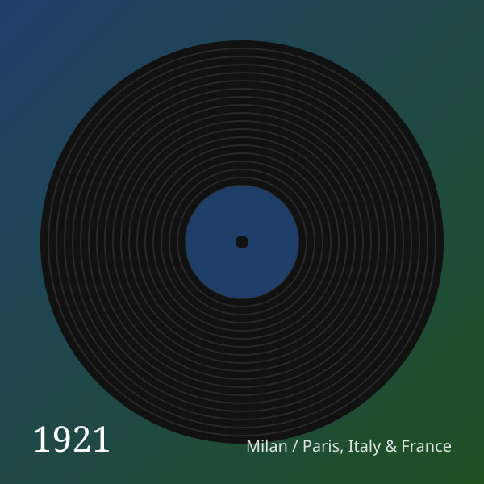

The only recording of the noise machines

Luigi Russolo built intonarumori, "noise-intoners": boxes with cranks and levers that howled, crackled, gurgled and buzzed. His first concert with them, in Milan in 1914, ended in a riot.
The machines themselves are gone. Of everything he wrote for them, only a fragment of one score survives. What does survive is one gramophone disc made with his brother Antonio in 1921: "Corale" and "Serenata", where a fairly ordinary little orchestra is shadowed and interrupted by a roar nobody can quite place. The French national library lists it as Grammofono R6920, issued in 1924.
It is music aimed at an audience, from people who wanted a fight. The Futurists' later closeness to Mussolini belongs in the story too.